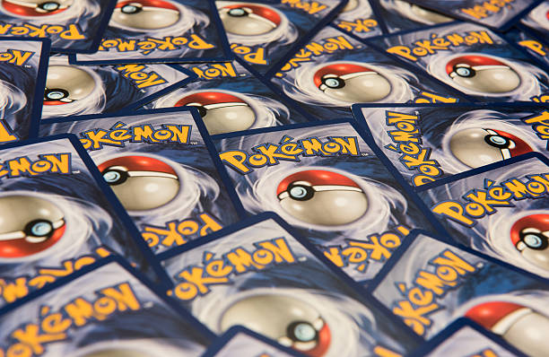
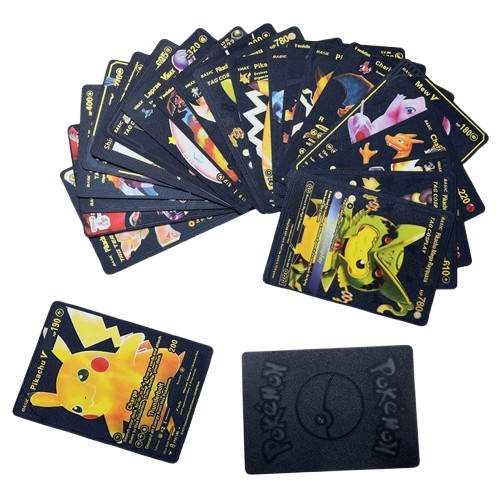

¿Qué es Pokémon TCG?
Pokémon TCG (Trading Card Game) es un juego de cartas coleccionables basado en la famosa serie de videojuegos y anime Pokémon. Los jugadores coleccionan cartas que representan diferentes Pokémon, ataques y objetos, y las usan para enfrentarse en batallas estratégicas.

Más sobre el Juego
El juego está diseñado para ser jugado entre dos personas, con cada jugador utilizando su propio mazo de cartas. Cada jugador toma turnos para jugar cartas y realizar movimientos estratégicos, como atacar al oponente con sus Pokémon.

Cartas Pokémon
Cada carta representa un Pokémon, su tipo, ataques y habilidades. Las cartas pueden ser de diferentes tipos y rarezas, lo que añade una capa de estrategia al juego.